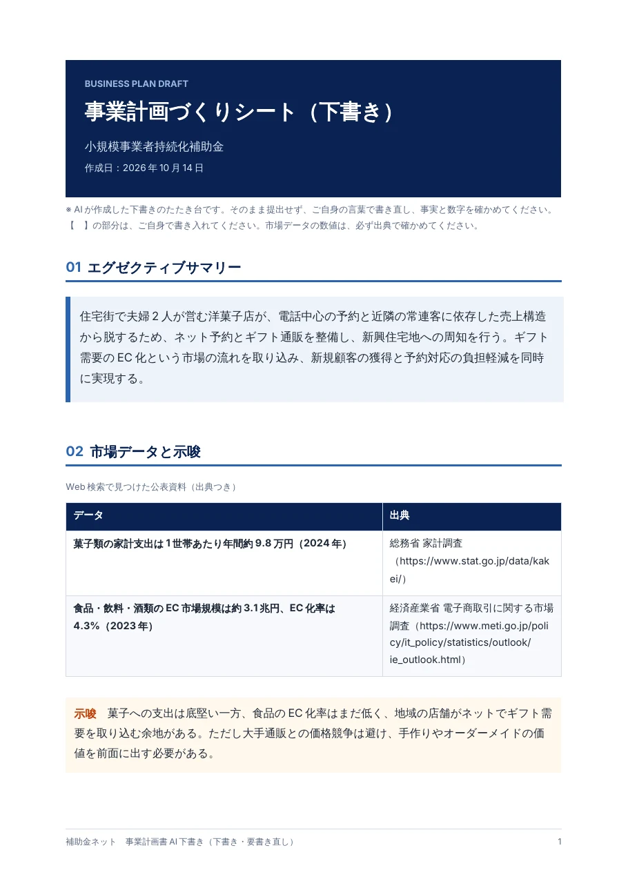
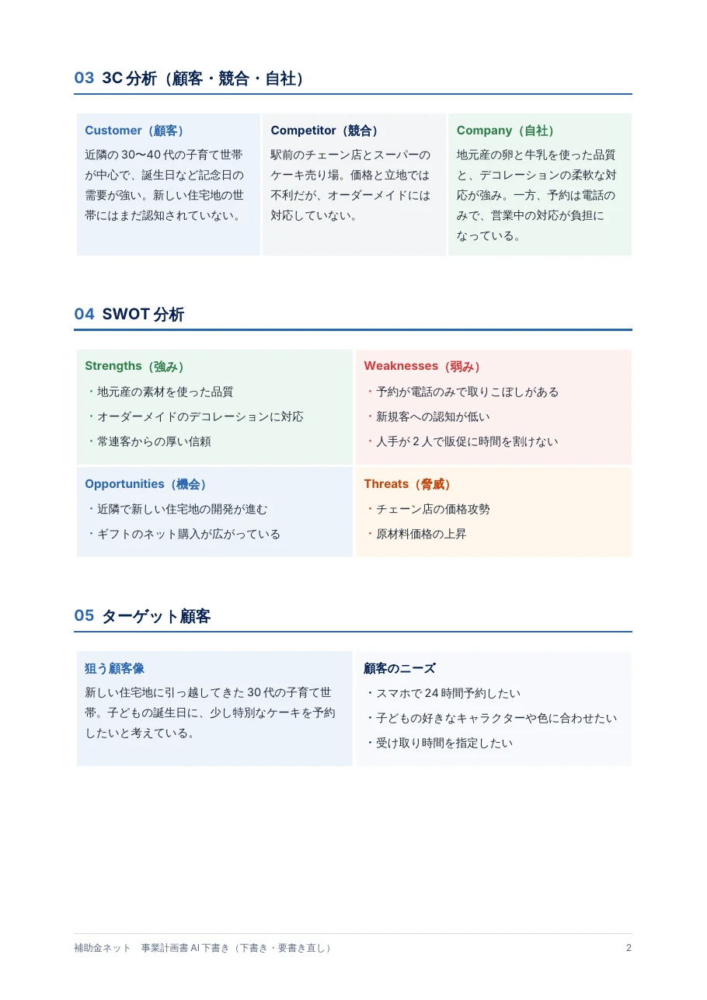
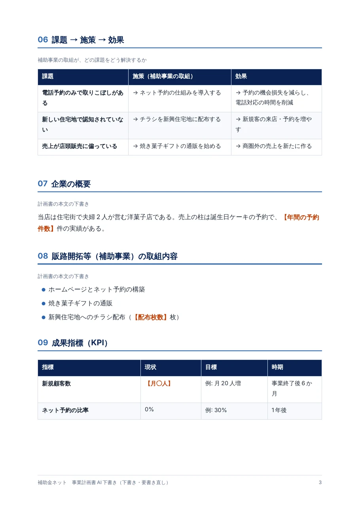
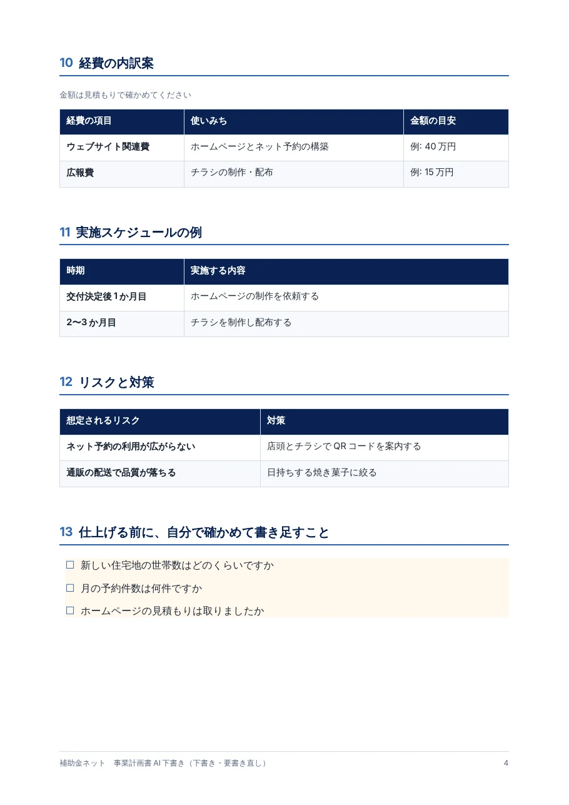

事業計画書AIの詳しい版（有料）では、AIがWeb検索で市場データを調べ、コンサルタントが作るシートのように、分析から計画までを一つの流れで整理した「事業計画づくりシート」を作ります。下は、架空の洋菓子店を例にしたサンプルです（Word出力）。
※ サンプルの事業者は架空です。市場データの数値・出典を含め、内容は説明のためのイメージです。実際の出力では、AIがWeb検索で見つけた公表資料の数値と出典が入ります。出力は下書きです。ご自身の言葉で書き直し、事実と数字を確かめてお使いください。
- 根拠がわかる出典つきの市場データと、そこから読み取れる示唆
- 分析が整理される3C分析・SWOT分析・ターゲット顧客
- 計画につながる課題→施策→効果、KPI、経費の内訳案、リスクと対策




詳しい版は、現在お問い合わせフォームから受け付けています。料金や納期などは、お返事でご案内します。